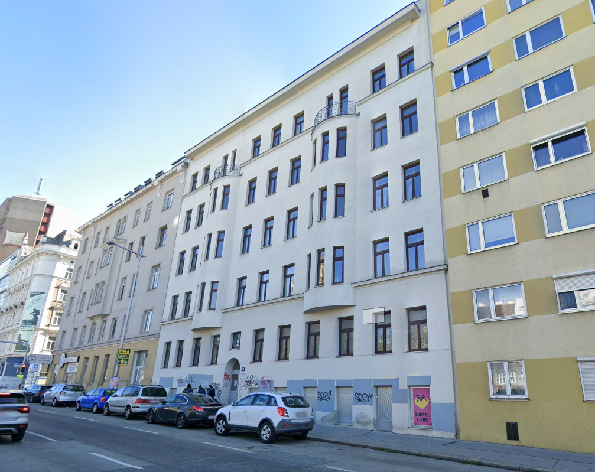

Kunst und Bildung
in Mariahilf
Kunstviertel 6 verbindet künstlerische Praxis, ästhetische Bildung und gesellschaftliches Engagement im sechsten Wiener Bezirk. Gemeinsam mit Kunstschaffenden, Schulen und Menschen aus der Nachbarschaft möchten wir Projekte entwickeln, die zum Gestalten, Lernen und Austausch einladen.
Über uns01 / Ausstellung
BODY. NOBODY.
EVERYBODY.

Wie erleben wir unseren Körper, andere Menschen und die Orte unseres Alltags? Gemeinsam mit dem INTERMESH Collective aus Köln plant Kunstviertel 6 eine Ausstellung über Nähe, Grenzen und Zugehörigkeit. Künstlerische Arbeiten sollen mit Perspektiven von Jugendlichen und Menschen aus dem Bezirk zusammenkommen.
Zur Ausstellung02 / Atelier
Ein künstlerischer
Lebensort am Gürtel

Unser Atelier am Mariahilfer Gürtel 14 bietet auf über 150 Quadratmetern Raum für individuelle Arbeit, Workshops und gemeinsame Vorhaben. Große und kleine Räume, gemeinschaftliche Bereiche und ein begrünter Innenhof schaffen unterschiedliche Möglichkeiten für künstlerisches Arbeiten und Begegnungen. Die Nutzung bleibt wandelbar.
Atelier entdeckenGemeinsam etwas entwickeln
Sie haben eine Projektidee, interessieren sich für das Atelier oder möchten mit Kunstviertel 6 zusammenarbeiten? Wir freuen uns darauf, mit Ihnen ins Gespräch zu kommen.